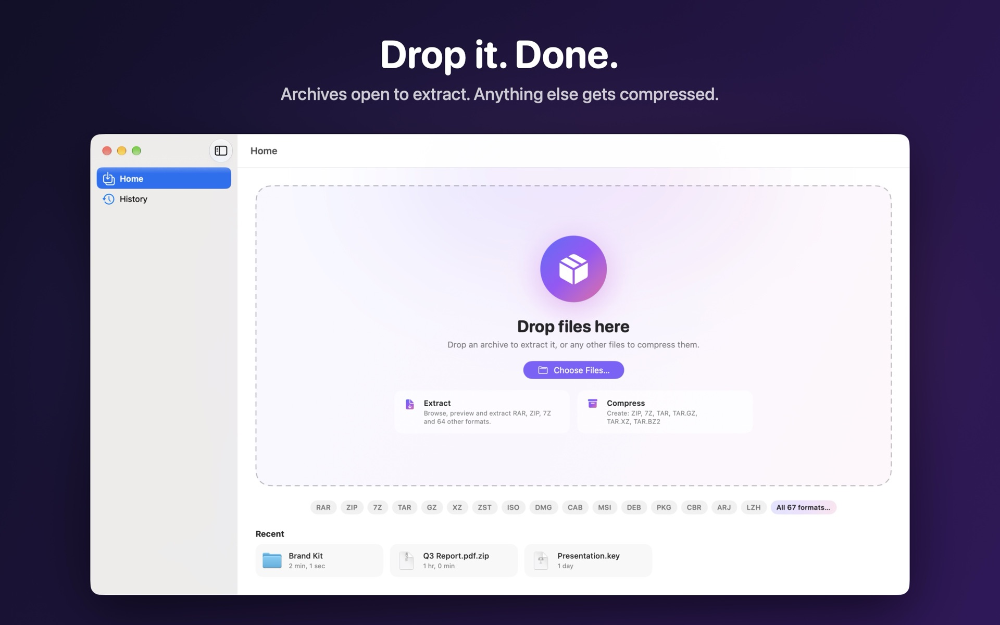
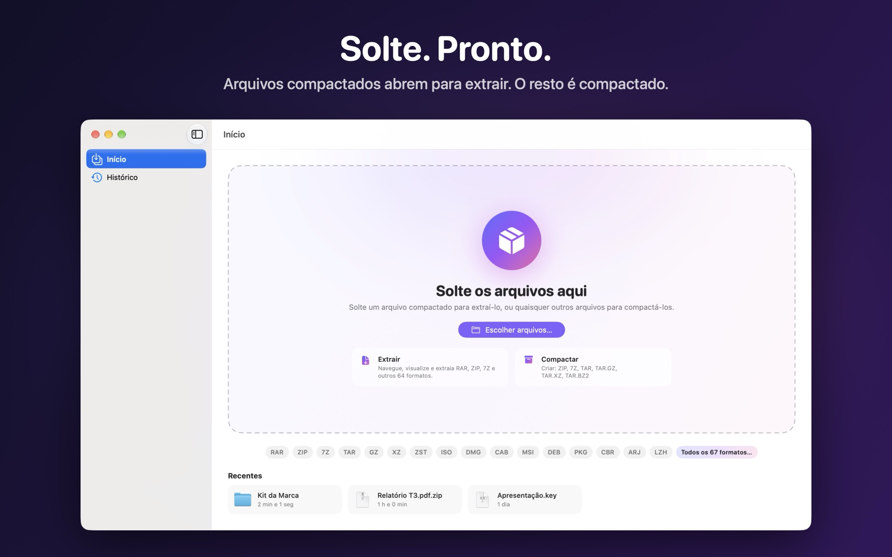

One window for everything
No modes to pick. Drop a RAR, ZIP or 7Z and Extracta opens it so you can look inside and extract. Drop folders, photos or documents and it switches to compress mode.

Features
60+ formats
RAR and RAR5, ZIP, 7Z, TAR, GZ, XZ, ZSTD, ISO, DMG, CAB, MSI, DEB, RPM, PKG, CBR/CBZ and more.
Look before you extract
Browse folders, search, sort and preview any file with Quick Look.
Drag to Finder
Drag files or whole folders straight out of the archive. They are extracted as you drop them.
Passwords & split archives
Opens encrypted and multi-part archives, and checks archives for damage.
Compress
Create ZIP and 7Z with AES-256 passwords, or TAR, TAR.GZ, TAR.XZ and TAR.BZ2.
Right in Finder
“Extract Here”, “Extract To…” and “Compress” in Finder’s right-click menu.
34 languages
Fully translated, from Arabic to Vietnamese.
Private
No account, no ads, no tracking. Your files never leave your Mac.
Support
How do I add “Extract Here” to Finder’s right-click menu?
Open Extracta and choose Extracta › Setup Assistant…, or click “Turn On…” on the Home screen. It opens System Settings and shows you where to click: find Extracta in the list, turn on its switch and click OK. You can also go there yourself: System Settings › General › Login Items & Extensions › Extensions, then the ⓘ next to Extracta.
Why does Extracta ask for access to my Home folder?
Mac App Store apps can only write to folders you allow. Allowing your Home folder once lets Extracta extract archives right next to the original file. If you skip it, Extracta asks for each new folder instead. You can review or remove access in Extracta › Settings › Finder & Access.
It says part of the archive is missing.
Split archives (.part1.rar, .r00, .7z.001, .z01) need every part in the same folder. Open the first part and Extracta finds the rest.
Which formats can Extracta open and create?
Open: RAR, RAR5, ZIP, ZIPX, 7Z, TAR, ARJ, LZH, LHA, CAB, CPIO, AR, WIM, XAR, GZ, TGZ, BZ2, TBZ, XZ, TXZ, ZST, TZST, LZMA, LZ, Z, ISO, UDF, DMG, APFS, HFS, IMG, VHD, VHDX, VMDK, VDI, QCOW2, SquashFS, CramFS, EXT4, NTFS, FAT, PKG, XIP, DEB, RPM, MSI, NSIS EXE, APK, IPA, APPX, JAR, XPI, CBR, CBZ, CB7, CBT, EPUB, CHM, DOCX, XLSX, ODT and split volumes. Create: ZIP, 7Z, TAR, TAR.GZ, TAR.XZ, TAR.BZ2.
I see __MACOSX or ._ files in other apps. Why not in Extracta?
Those are leftovers macOS adds when it creates archives. Extracta hides and skips them by default; you can turn that off in Settings › General.
Something else? Open an issue and I will get back to you.
Em português
O Extracta é o jeito mais simples de abrir arquivos compactados no Mac. Solte um RAR, ZIP ou 7Z para ver o conteúdo e extrair, ou solte pastas e arquivos comuns para compactar. Mais de 60 formatos, arquivos com senha, Visualização Rápida, arrastar direto para o Finder e “Extrair aqui” no menu de contexto do Finder.

Dúvidas ou problemas? Abra uma issue. Veja também a política de privacidade.
Licenses
Extracta uses 7-Zip by Igor Pavlov, licensed under the GNU LGPL with the unRAR restriction. The license text is included in the app.